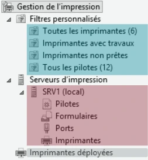

Le support est transcrit et structuré pour la lecture. Les valeurs secrètes et les noms propres au centre de formation sont neutralisés dans les exemples concernés.
et de recherche.
Domaine
enfant
transitive bidirectionnelle.
Forêt
Active Directory
Les services d’annuaire-Présentation et installation
Domaine Active Directory
• Pour quoi faire ?
• Centraliser la gestion de l’authentification.
• Centraliser les informations relatives aux utilisateurs et ressources.
• Centraliser la gestion des paramètres utilisateurs et ordinateurs.
• Fournir une base de fonctionnement aux services et outils Microsoft.
• Utilisation de protocoles standardisés : DNS / LDAP / Kerberos
• DNS : Résolution des noms de machines et localisation de services.
• LDAP : Norme pour les systèmes d’annuaires avec une structure de base de données arborescente.
• Kerberos : Protocole d’authentification reposant sur un mécanisme de clés secrètes et l’utilisation de
tickets.
3
3
Active Directory
Les services d’annuaire - Présentation et installation
La forêt Active Directory
Une forêt
Domaine racine
Comprend un ou plusieurs domaine de la forêt
AD partageant le même schéma, les
mêmes informations de configuration
et de recherche. Relation parent / enfant
Les domaines d’une même forêt sont Relationde domaine
Domaine
liés par une relation d’approbation enfant
transitive bidirectionnelle.
Forêt
4
4Ensemble d’ordinateurs en réseau qui partagent une base de donnée commune.
Un domaine est administré comme un ensemble, régi par des règles et procédures communes.
ADDS
Les contrôleurs d’un domaine AD sont les serveurs qui assurent la gestion du domaine. Ils assurent les tâches d’hébergement et de gestion de la base AD, ainsi que l’authentification.
Est une composante logique du domaine utilisée afin d’optimiser :
Prérequis pour un contexte de domaine Avant de promouvoir un serveur en Contrôleur de Domaine, ces prérequis doivent être respectés :
Composants Windows Les composants relatifs aux services ADDS doivent être installés.
Versions Active Directory
| Prérequis | Description |
|---|---|
| Nom d’hôte du poste | Le nom d’hôte et le suffixe DNS doivent être correctement définis. |
| Configuration réseau et adressage IP | Ces paramètres doivent être opérationnels. |
| Composants Windows | Les composants relatifs aux services AD DS doivent être installés. |
| Prise en compte de l’existant | Analyser l’infrastructure existante et déterminer les points essentiels. |
| Préparation de l’AD | La forêt ou le domaine peut être préparé lors de l’ajout d’un DC. |
| Niveau fonctionnel de domaine | 2008 R2 | 2012 R2 | 2016 |
|---|---|---|---|
| Versions des CD | 2008 R2, 2012 R2, 2016, 2019 | 2012 R2, 2016, 2019 | 2016, 2019 |
| Niveau fonctionnel de la forêt | 2008 R2 | 2012 R2 | 2016 |
PS C:\Windows\System32> Uninstall-AddsDomainController
Peut modifier le schéma. Dans le schéma sont stockées les caractéristiques des objets. Les autres CD ont accès en L au schéma.
Alloue les « bloc d’IDentificateurs Relatifs » aux autres CD. Ces derniers puisent dans le bloc pour attribuer les SID aux objets.
Il gère : MAJ des mots de passe. MAJ des GPO. Synchronisation des horloges. Explorateur principal de domaine.
| Portée | Rôle | Description |
|---|---|---|
| Forêt | Maître de nom de domaine | Contacté lors de l’ajout ou de la suppression d’un domaine dans une forêt, ou du renommage d’un domaine. |
| Forêt | Maître de schéma | Peut modifier le schéma. Le schéma stocke les caractéristiques des objets. Les autres CD ont accès en lecture au schéma. |
| Domaine | Maître RID | Alloue les blocs d’identificateurs relatifs aux autres CD, qui les utilisent pour les SID des objets. |
| Domaine | Maître d’infrastructure | Responsable des objets des autres domaines de la forêt qui sont membres d’objets de son domaine. |
| Domaine | Maître émulateur PDC | Mises à jour des mots de passe et des GPO, synchronisation des horloges et explorateur principal de domaine. |
Conteneurs
Utilisateur
Ordinateur
Groupe
Il est conseillé d’utiliser des modèles de comptes pour simplifier la création de nouveaux comptes utilisateurs.
modèle
inactif
Par défaut, les utilisateurs du domaine peuvent ouvrir une session sur les ordinateurs du domaine.
Utilisateur
Possède
AD
Profil
%systemdrive%\Utilisateurs\%username%
Utilisé pour les utilisateurs ayant besoin d’un accès à leur profil depuis n’importe quel ordinateur. C’est ici qu’interviennent les profils itinérants.
Le profil est chargé sur l’ordinateur.
L’utilisateur travaille.
À la fermeture de session, le profil est synchronisé.
Dispose d’un identifiant de sécurité (SID). Ne dispose pas d’identifiant de sécurité.
Peut être utilisé pour répondre à un ensemble de besoins. N’est utilisable qu’à des fins de messagerie.
GG_Commerciaux_Nantes
Utilité
des caractéristiques communes.
Contraintes
d’appartenance
groupe global du même domaine.
Contrainte
d’utilisation
(forêt).
Membres
Utilité
DL_Marketing_Sur_SRVFIC_CT
CT
donnée.
DL_Marketing_Sur_SRVFIC_M
Contraintes
M
Marketing
d’appartenance
la forêt.
L
DL_Marketing_Sur_SRVFIC_L
Contrainte
DL_Marketing_Sur_SRVFIC_R
R
ressources de leur domaine de création.
d’utilisation
Élements (utilisateurs et groupes locaux) présents dans la base SAM des CD avant leur promotion. Une fois la promotion faite, ces derniers sont déplacés dans ce conteneur.
| Nom de l’objet | Fonction |
|---|---|
| Builtin | Éléments utilisateurs et groupes locaux présents dans la base SAM des CD avant leur promotion, puis déplacés dans ce conteneur selon le support. |
| Computers | Emplacement de stockage par défaut des comptes ordinateurs. |
| System | Éléments nécessaires au fonctionnement de l’AD et aux composants associés. |
| Users | Groupes et utilisateurs existant par défaut dans un AD. |
Active_Directory
Builtin
Computers
Domain_Controllers
ForeignSecurityPrincipals
Manage_Security_Accounts
Users
Mon_Entreprise
Groupes
NANTES
Stagiaires
Ordinateurs
Administration
Direction
Formateurs
Ordinateur_Administration
Active Directory
Les bases de gestion d’un domaine
Les unités d’organisation
• Des conteneurs supplémentaires peuvent être créés :
• OU Organizational Unit / UO Unité d’Organisation
• L’élaboration d’une structure organisationnelle doit prendre en considération les besoins
suivants :
• Les stratégies de groupe (GPO Group Policy Object)
• Les délégations administratives
• L’organisation des objets dans l’arborescence
• Tout objet de l’annuaire ne peut être positionné directement que dans un seul conteneur.
• Attention :
• Sur les CD, les UO sont protégées contre toute suppression accidentelle (il est possible de
modifier cela).
25
25
Active Directory
Les bases de gestion d’un domaine
Active_Directory
Les unités d’organisation Builtin
Computers
Domain_Controllers
ForeignSecurityPrincipals
Manage_Security_Accounts
Users
Mon_Entreprise
Groupes
NANTES
Stagiaires
Ordinateurs
Administration
Direction
Formateurs
Ordinateur_Administration
26
26Sur un espace disque formaté en NTFS ou ReFS :
Lecture des attributs étends Modifier les autorisations Suppression Suppression de sous-dossiers et fichiers
Partage
Réseau
| Opération | Au sein d’une même partition | Entre deux partitions ou disques |
|---|---|---|
| Déplacement | Conservation | Héritage |
| Copie | Héritage | Héritage |
Quand l’utilisateur accède depuis son poste de travail à une ressource partagée :
Afin de gérer efficacement l’accès aux ressources, Microsoft préconise l’imbrication des Groupes Globaux et de Domaines Locaux.
A Le compte utilisateur est créé.
G Il est affecté aux Groupes Globaux.
DL Un groupe de Domaine Local est créé par type de privilège pour chaque ressource.
P Des autorisations NTFS sont attribuées pour ce groupe de domaine local sur la ressource.
Port d’impression Lien qui permet la communication entre le périphérique d’impression et le serveur (ou à un poste client).
File d’attente Liste des documents en attente de traitement par l’imprimante.
Imprimante locale Imprimante directement (physiquement) connectée à un serveur ou à un poste client.
Imprimante réseau Imprimante indépendante qui possède sa propre carte réseau, parfois un écran de configuration ou/et un petit serveur web embarqué pour l’administration à distance.
| Vocabulaire | Définition |
|---|---|
| Port d’impression | Lien entre le périphérique d’impression et le serveur ou le poste client. |
| File d’attente | Liste des documents en attente de traitement. |
| Imprimante locale | Imprimante physiquement connectée à un serveur ou à un poste client. |
| Imprimante partagée | Imprimante accessible sur le réseau. Si elle est locale au poste qui la partage, ce poste doit être allumé. |
| Imprimante réseau | Imprimante avec sa propre interface réseau, parfois un écran ou un serveur Web embarqué. |
Imprimer

Plusieurs méthodes peuvent être utilisées pour déployer les imprimantes :